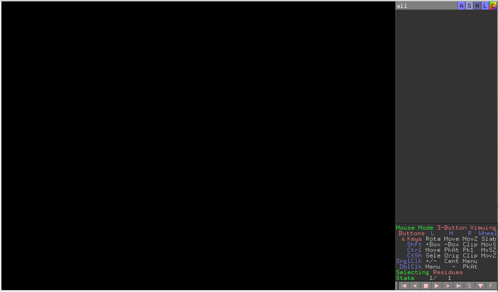
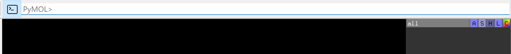
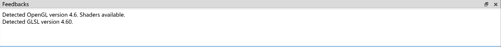

Visualization
Dockey use PyMOL to view 3D structure of molecules, poses, interactions. The PyMOL usage can be found in https://pymolwiki.org/index.php/Practical_Pymol_for_Beginners.

Go to View menu -> Show Pymol Sidebar to open PyMOL right sidebar to use advanced functions.
Go to View menu -> Show Pymol Command or click  button to open PyMOL input field which allows you to input PyMOL commands to manipulate the view.
button to open PyMOL input field which allows you to input PyMOL commands to manipulate the view.
You also can go to PyMOL menu to select action to manipulate the view.

Go to View menu -> Show Pymol feedback to show pymol output messages.
